Generated by ChatGPT on 2025-12-16
逐字稿下載：ChatGPT_zh_L03_第_3_講_Decoherence主題_3.txt
完整音檔：
Segment 1:
Segment 2:
Segment 3:
Segment 4:
Segment 5:
Segment 6:
Segment 7:
Segment 8:
Segment 9:
Segment 10:
Segment 11:
Segment 12:
Segment 13:
Segment 14:
本講聚焦於「退相干在量子測量理論中的角色」，主軸包括：
我們會兼顧嚴謹數學推導與物理解釋，並串聯前兩講中介紹的「系統 + 裝置 + 環境」圖像，強調 Bohmian 裝置－系統分割（apparatus + system）和環境耦合在退相干中的角色。
考慮一個二能階系統 \(S\)，在基底 \(\{|0\rangle, |1\rangle\}\) 中的狀態為 \[ |\psi\rangle_S = \alpha |0\rangle + \beta |1\rangle,\quad |\alpha|^2 + |\beta|^2 = 1. \] 測量裝置 \(A\) 的「指針」自由度用連續變量 \(q\) 描述，其共軛動量為 \(p\)，初態為高斯波包 \[ |\phi_0\rangle_A = \int dq\, \phi_0(q)\,|q\rangle,\quad \phi_0(q) = \frac{1}{(2\pi \sigma^2)^{1/4}} \exp\left(-\frac{q^2}{4\sigma^2}\right). \]
von Neumann 型測量哈密頓量： \[ H_{\text{int}} = g\, \hat{A}_S \otimes \hat{p}_A, \] 其中 \(\hat{A}_S\) 是被測可觀察量，對應本例 \[ \hat{A}_S = |1\rangle\langle 1| \quad (\text{或更一般地 } \hat{A}_S = a_0|0\rangle\langle 0| + a_1|1\rangle\langle 1| ). \] 令測量脈衝持續時間為 \(\tau\)，定義 \(K = g\tau\)。時間演化算符： \[ U = e^{-i H_{\text{int}} \tau/\hbar} = e^{-i K \hat{A}_S \otimes \hat{p}_A /\hbar}. \]
若採用 \(\hat{A}_S = |1\rangle\langle 1|\)，利用 \(|0\rangle, |1\rangle\) 為本徵態，演化為 \[ \begin{aligned} U\,|\psi\rangle_S|\phi_0\rangle_A &= \alpha\,|0\rangle\,e^{-i K\cdot 0 \otimes \hat{p}_A/\hbar}|\phi_0\rangle_A + \beta\,|1\rangle\,e^{-i K \cdot 1 \otimes \hat{p}_A/\hbar}|\phi_0\rangle_A\\ &= \alpha\,|0\rangle |\phi_0(q)\rangle + \beta\,|1\rangle |\phi_1(q)\rangle, \end{aligned} \] 其中 \[ |\phi_1(q)\rangle = e^{-i K \hat{p}_A/\hbar}|\phi_0(q)\rangle \] 對應指針波包的平移： \[ \phi_1(q) = \phi_0(q - K). \]
系統－裝置疊加糾纏狀態： \[ |\Psi\rangle_{SA} = \alpha\,|0\rangle|\phi_0\rangle + \beta\,|1\rangle|\phi_1\rangle. \] 若 \(|\phi_0\rangle, |\phi_1\rangle\) 幾乎正交（位移 \(K\gg \sigma\)），則它們可視為「巨觀可分辨」的不同指針讀數狀態。
此處尚未引入環境；然而單看系統 \(S\) 的約化態： \[ \rho_S = \operatorname{Tr}_A\,|\Psi\rangle\langle\Psi| = |\alpha|^2 |0\rangle\langle 0| + |\beta|^2 |1\rangle\langle 1| + \alpha\beta^* \langle\phi_1|\phi_0\rangle |0\rangle\langle 1| + \alpha^*\beta \langle\phi_0|\phi_1\rangle |1\rangle\langle 0|. \] 若 \(\langle\phi_0|\phi_1\rangle \to 0\)，則 \[ \rho_S \approx |\alpha|^2 |0\rangle\langle 0| + |\beta|^2 |1\rangle\langle 1|. \] 這就是「退相干完成標準測量」的最簡形式：由糾纏與指針態正交性導致系統的相位相干性（off-diagonal coherence）消失。
直覺圖像： 系統狀態 \(|0\rangle, |1\rangle\) 各自「拉動」不同的指針位移，使得測量裝置的波函幾乎無重疊，從而在約化描述中抑制了干涉項。
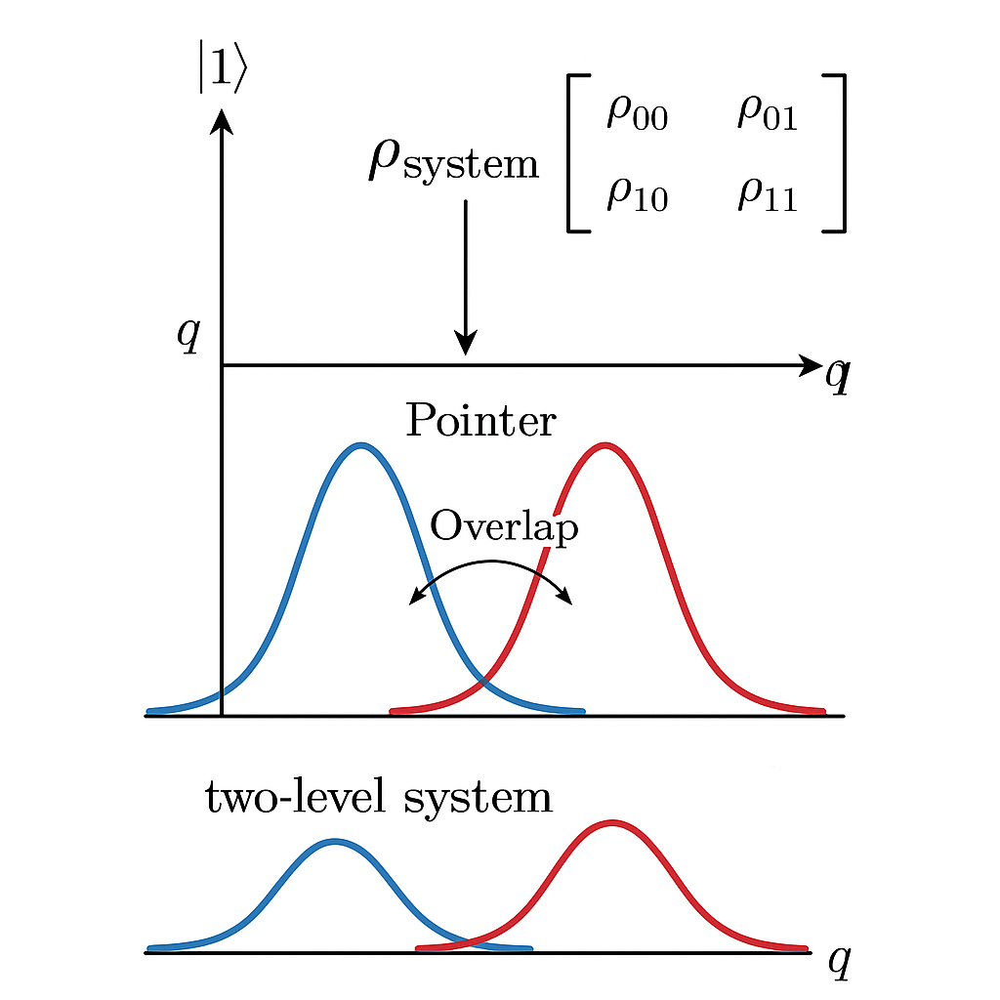
更一般地，對於任意系統 \(S\) 與裝置 \(A\) 的單位演化 \(U\)，初始狀態假設為張量積 \(\rho_S \otimes \rho_A\)。測量操作後的系統約化狀態 \[ \mathcal{E}(\rho_S) = \operatorname{Tr}_A\left[ U(\rho_S \otimes \rho_A) U^\dagger \right]. \] 選擇裝置的一組正交基底 \(\{|a_k\rangle\}\)，並將 \(\rho_A\) 展開，對純淨裝置初態 \(|\phi_0\rangle\) 特別簡化。定義 Kraus 算子 \[ M_k = \langle a_k| U |\phi_0\rangle_A, \] 則 \[ \mathcal{E}(\rho_S) = \sum_k M_k \rho_S M_k^\dagger, \] 並滿足完全正規與跡保持條件 \[ \sum_k M_k^\dagger M_k = \mathbb{I}_S. \]
若 \(|a_k\rangle\) 被選為對應不同「指針讀數」的正交態，Kraus 算子 \(M_k\) 對應「有結果 \(k\) 的測量後狀態更新」。在無選擇測量（non-selective measurement）中，我們不條件化在特定結果 \(k\)，而是將所有結果加總，因此表現為上式的完全正則（CPTP）映射。這種無選擇測量正是「退相干超算符」的一種典型表現。
二能階投影測量的例子： 若觀察量 \(\hat{A} = \sum_a a P_a\) 具有本徵投影 \(P_0 = |0\rangle\langle 0|,\ P_1 = |1\rangle\langle 1|\)，且我們考慮「理想投影測量」，則 Kraus 算子可取為 \[ M_0 = P_0,\quad M_1 = P_1, \] 對任意 \(\rho_S\) \[ \mathcal{E}(\rho_S) = P_0 \rho_S P_0 + P_1 \rho_S P_1. \] 若以矩陣形式在 \(\{|0\rangle, |1\rangle\}\) 中寫出 \[ \rho_S = \begin{pmatrix} \rho_{00} & \rho_{01}\\ \rho_{10} & \rho_{11} \end{pmatrix} \quad\Rightarrow\quad \mathcal{E}(\rho_S) = \begin{pmatrix} \rho_{00} & 0\\ 0 & \rho_{11} \end{pmatrix}. \] 明顯地，\(\rho_{01},\rho_{10}\) 消失，這是一個「理想的完全退相干通道」。
在 Bohm 式（de Broglie–Bohm）圖像中，我們強調：
引入環境後，整體純態 \[ |\Psi\rangle_{SAE} = \sum_i c_i |s_i\rangle_S |a_i\rangle_A |e_i\rangle_E, \] 其中 \(|a_i\rangle\) 是指針態，\(|e_i\rangle\) 是對應各指針結果的環境態。只要 \[ \langle e_i | e_j \rangle \approx 0,\quad i\neq j, \] 則系統－裝置約化態 \[ \rho_{SA} = \operatorname{Tr}_E\,|\Psi\rangle\langle\Psi| \approx \sum_i |c_i|^2\, |s_i\rangle\langle s_i| \otimes |a_i\rangle\langle a_i|. \]
這正是 Bohm 指出之「有效分枝（effective branches）」：雖整體態仍為疊加，但不同分枝在配置空間中互不干涉，觀察者沿著其中一個分枝的有效軌跡演化。從運動方程角度，退相干導致不同分枝對於任一巨觀變量而言是動力學上獨立的。
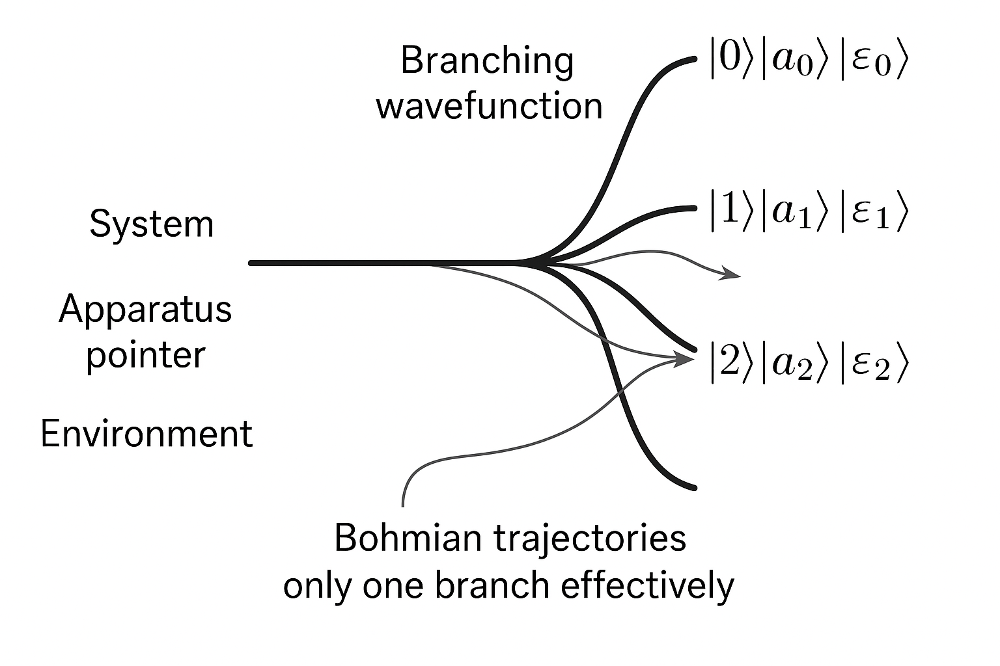
延續 3.1 的模型，若耦合 \(K\) 很小使得指針位移 \(K \ll \sigma\)，則 \(|\phi_0\rangle\) 與 \(|\phi_1\rangle\) 有很大重疊： \[ \langle \phi_0 | \phi_1 \rangle = \exp\left(-\frac{K^2}{8\sigma^2}\right) \approx 1 - \frac{K^2}{8\sigma^2} + O(K^4). \] 此時單次測量獲得之資訊非常有限，稱為「弱測量」。在這種情形中，約化態 \[ \rho_S = \begin{pmatrix} |\alpha|^2 & \alpha\beta^* \langle \phi_1 | \phi_0\rangle\\ \alpha^*\beta \langle \phi_0 | \phi_1\rangle & |\beta|^2 \end{pmatrix}, \] 其中相干項只被輕微抑制： \[ \rho_{01} \to \rho_{01}' = \rho_{01}\, \langle\phi_1|\phi_0\rangle. \]
因此弱測量帶來「部分退相干」；若持續重複進行弱測量（或實質上是持續與指針/環境弱耦合），則相干項將逐漸衰減，最終趨近完全退相干。
弱測量的 Kraus 算子： 在適當近似下，弱測量可由一組接近單位算符的 Kraus 算子 \[ M_\pm = \sqrt{\frac{1}{2}}\left(\mathbb{I} \pm \epsilon \hat{A}\right) + O(\epsilon^2), \] 其中 \(\epsilon \ll 1\) 為小參數，代表弱耦合與短時間。施加在 \(\rho_S\) 上 \[ \mathcal{E}(\rho_S) = M_+ \rho_S M_+^\dagger + M_- \rho_S M_-^\dagger = \rho_S + \epsilon^2 \left(\hat{A} \rho_S \hat{A} - \frac{1}{2}\{\hat{A}^2, \rho_S\} \right) + O(\epsilon^3). \] 這個二階項即為 Lindblad 型退相干項的一階離散步驟。
考慮將弱測量視為時間步長 \(\Delta t\) 內的一次微弱作用，令 \(\epsilon^2 \propto \Delta t\)，在 \(\Delta t \to 0\) 的極限下，可以得到一個連續時間的主方程。令 Lindblad 跳躍算符 \[ L = \sqrt{\gamma}\,\hat{A}, \] 其中 \(\gamma\) 為退相干率。則主方程 \[ \frac{d\rho}{dt} = -\frac{i}{\hbar}[H,\rho] + \mathcal{D}[L]\rho, \] 其中耗散超算符 \[ \mathcal{D}[L]\rho = L\rho L^\dagger - \frac{1}{2}\{L^\dagger L,\rho\}. \]
選擇 \(\hat{A}\) 為對自旋 \(z\) 分量的投影 \( \sigma_z\)，則 \[ L = \sqrt{\gamma}\,\sigma_z,\quad L^\dagger L = \gamma\,\mathbb{I}, \] 代入得 \[ \mathcal{D}[L]\rho = \gamma\,(\sigma_z\rho\sigma_z - \rho). \] 在基底 \(\{|0\rangle,|1\rangle\}\) 中，假設 \(H=0\) 或忽略其影響，寫為矩陣形式 \[ \frac{d}{dt} \begin{pmatrix} \rho_{00} & \rho_{01}\\ \rho_{10} & \rho_{11} \end{pmatrix} = \gamma \left[ \begin{pmatrix} \rho_{00} & -\rho_{01}\\ -\rho_{10} & \rho_{11} \end{pmatrix} - \begin{pmatrix} \rho_{00} & \rho_{01}\\ \rho_{10} & \rho_{11} \end{pmatrix} \right] = \gamma \begin{pmatrix} 0 & -2\rho_{01}\\ -2\rho_{10} & 0 \end{pmatrix}. \] 因此 \[ \dot{\rho}_{00} = 0,\quad \dot{\rho}_{11} = 0,\quad \dot{\rho}_{01} = -2\gamma\rho_{01}, \] 解為 \[ \rho_{01}(t) = \rho_{01}(0)e^{-2\gamma t}. \]
這清楚地顯示：弱連續測量對 \(\sigma_z\)（或等價的環境「監測」）導致：
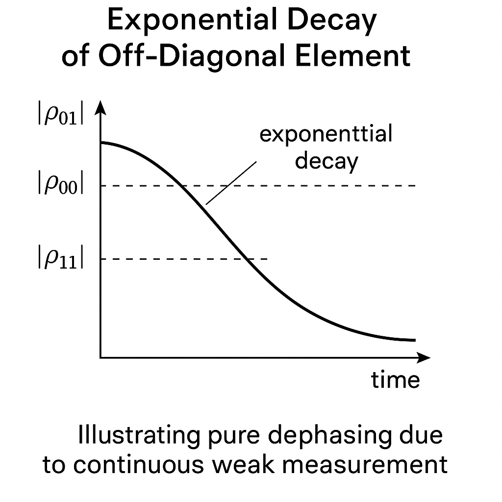
上述 Lindblad 主方程描述的是「平均過所有測量結果」的無選擇動力學。若保留測量記錄（例如連續 homodyne 檢測），則系統的條件態 \(\rho_c(t)\) 準守隨機主方程（stochastic master equation, SME），通常可寫為 \[ d\rho_c = -\frac{i}{\hbar}[H,\rho_c]\,dt + \mathcal{D}[L]\rho_c\,dt + \sqrt{\eta}\,\mathcal{H}[L]\rho_c\,dW_t, \] 其中 \[ \mathcal{H}[L]\rho = L\rho + \rho L^\dagger - \operatorname{Tr}(L\rho + \rho L^\dagger)\,\rho, \] \(\eta\) 為偵測效率，\(dW_t\) 為 Wiener 過程微分。量子軌跡（quantum trajectories） 描述的是在特定測量結果歷史下，系統態如何隨機地「塌縮」並演化。
退相干的觀點：
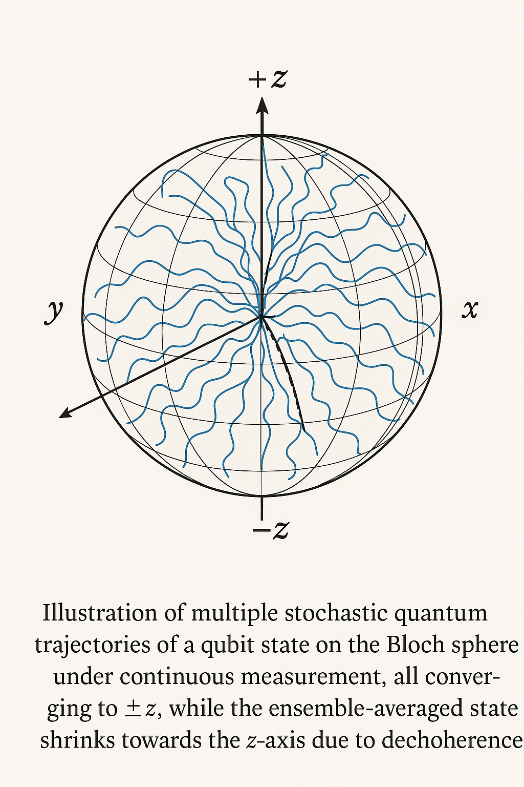
Quantum Non-Demolition (QND) 測量的核心要求是：被測可觀察量 \(\hat{O}\) 的值經過測量後不被摧毀，後續可重複測量並得到相同的結果（忽略其他噪音源）。
形式化條件：
若兩條件成立，則在理想情形下，測量只將 \(\hat{O}\) 的資訊轉移到裝置指針上，而不影響 \(\hat{O}\) 的值；因而可以對同一量子態中的 \(\hat{O}\) 值連續或多次測量，稱為「非破壞」。
考慮系統初態 \[ |\psi\rangle = \sum_o c_o |o\rangle,\quad \hat{O}|o\rangle = o |o\rangle, \] 與指針初態 \(|\phi_0\rangle\) 耦合： \[ U = e^{-i \kappa\, \hat{O}\otimes \hat{P}_A},\quad \kappa = g\tau. \] 演化後： \[ |\Psi\rangle_{SA} = U|\psi\rangle|\phi_0\rangle = \sum_o c_o |o\rangle|\phi_o\rangle, \] 其中 \(|\phi_o\rangle\) 為指針對應不同本徵值的波函。若 \(\langle \phi_o | \phi_{o'}\rangle \approx \delta_{oo'}\)，則約化系統態 \[ \rho_S \approx \sum_o |c_o|^2 |o\rangle\langle o|. \]
無選擇退相干： 若我們忽略指針讀數，則系統退相干到 \(\hat{O}\) 的本徵基底上的經典混合。
有選擇條件化： 若實際讀出某一結果 \(o^\ast\)，則系統態「塌縮」為 \[ \rho_{S|o^\ast} = \frac{P_{o^\ast} \rho_S P_{o^\ast}}{\operatorname{Tr}[P_{o^\ast}\rho_S]}, \] 其中 \(P_{o^\ast} = |o^\ast\rangle\langle o^\ast|\)。此時由於 QND 條件，後續的 QND 測量在理想上仍會給出 \(o^\ast\)，不會進一步改變被測量的可觀察量。
重要點： QND 並不「消除」退相干；它是設計測量使得退相干發生在 \(\hat{O}\) 的本徵基底上，並且在該基底上不再有後續的動力學擾動。因此 QND 是在退相干結構上精心工程（decoherence engineering）的一種方式。
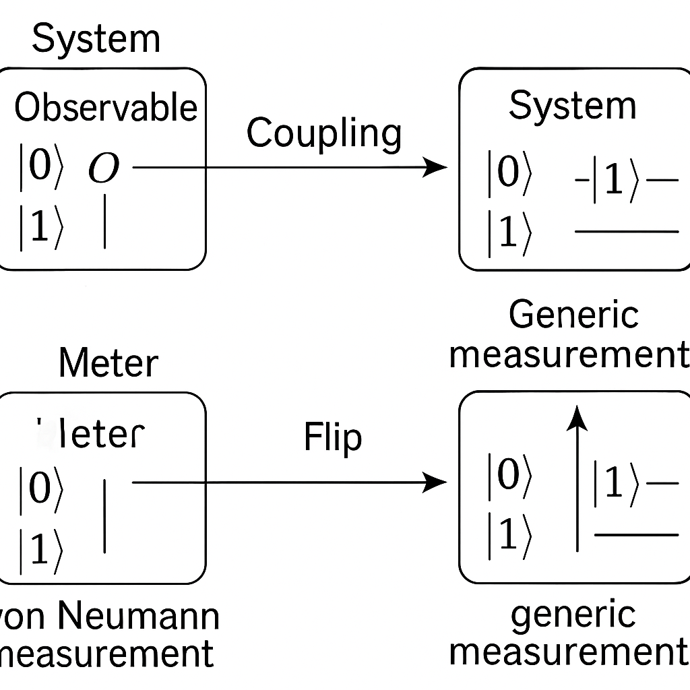
量子測量無法在不擾動系統的情況下獲取信息（除了某些特殊的 QND 情況，且僅對特定可觀察量）。「資訊獲取－擾動折衷」是指：測量越精確，對系統的退相干與狀態擾動越大；相反地，若希望儘量保存量子相干，則一次測量所能獲得的資訊必然有限。
在數學上，此折衷可用多種方式刻畫：
考慮兩個純態 \(|\psi_0\rangle, |\psi_1\rangle\)，其內積 \[ |\langle \psi_0|\psi_1\rangle| = c \in (0,1). \] 若我們設計一個測量裝置來區分這兩態，則存在一個最小的區分錯誤機率（Helstrom bound）： \[ P_{\text{err}}^{\min} = \frac{1}{2}\left(1 - \sqrt{1 - 4p_0p_1 c^2}\right), \] 其中 \(p_0,p_1\) 是先驗機率。為了達到此最優界，測量必須為投影測量到適當基底，這往往會將原態坍縮到與 \(|\psi_0\rangle,|\psi_1\rangle\) 都不同的新態，帶來最大程度的擾動。
若我們改用弱測量，只部分區分這兩個態——例如將兩態映射到兩個重疊的指針分佈——則單次測量的誤差高於 Helstrom bound；但同時，測量引入之退相干較小，稍後還可透過反向演化或額外操作部分恢復相干。
一種常用的定量刻度，對一族測量操作 \(\mathcal{M}\)：
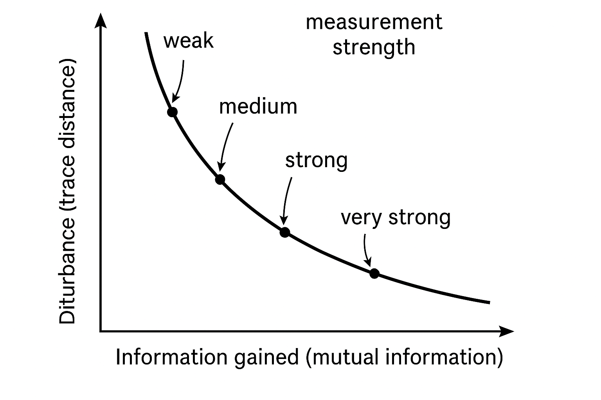
任何物理測量過程都對系統實現一個 CPTP 映射 \(\mathcal{E}\)。退相干通道（如相位阻尼通道）通常是不可逆的：不存在一個 CPTP 映射 \(\mathcal{R}\) 使得 \(\mathcal{R}\circ\mathcal{E} = \mathbb{I}\) 對所有輸入態成立。
測量過程的「不可逆性」正對應於：
在退相干理論中，這個觀點將「測量」與「環境誘導退相干」統一到同一數學框架：兩者皆為部分追蹤後的 CPTP 映射，只是是否讀出環境（或裝置）的自由度有所差別。
EV bomb tester 問題：如何檢測一顆「敏感炸彈」是否存在，且若炸彈是好的（任何光子與其互動即爆炸），我們依然能有一部分機率在不引爆炸彈的情況下得知其存在。這就是「互動自由測量」。
基本裝置是 Mach–Zehnder 干涉儀：
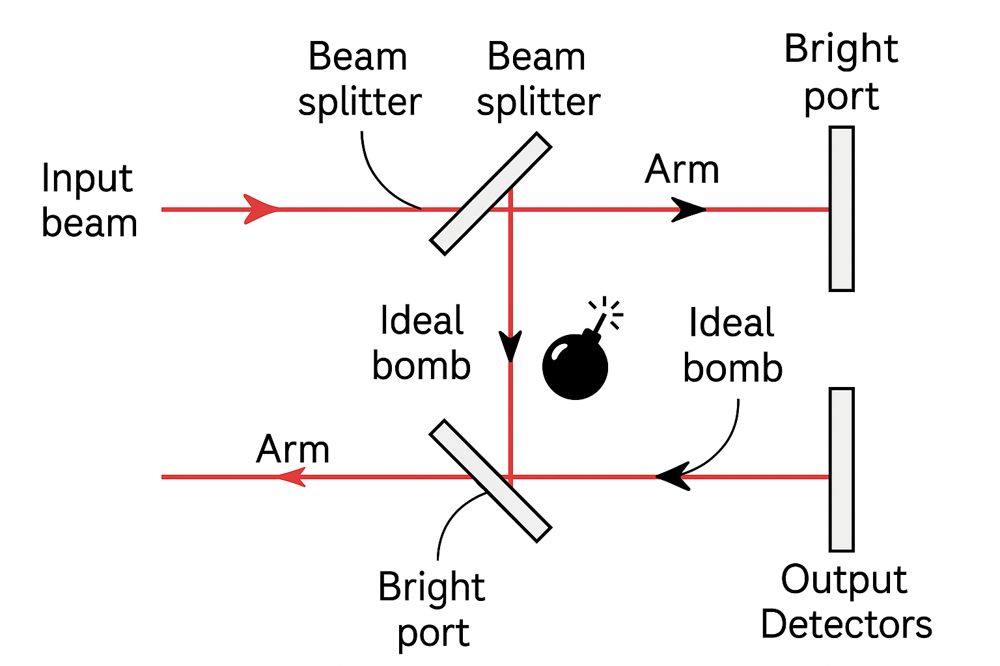
令初態入射模式 \(|\text{in}\rangle\) 過 BS1 後： \[ |\psi\rangle = \frac{1}{\sqrt{2}}(|U\rangle + i|L\rangle), \] 相位選擇依實際光學實作而定，此處選擇方便分析。BS2 對兩臂的變換為 \[ |U\rangle \to \frac{1}{\sqrt{2}}(|B\rangle + i|D\rangle),\quad |L\rangle \to \frac{1}{\sqrt{2}}(i|B\rangle + |D\rangle), \] 其中 \(|B\rangle, |D\rangle\) 是亮端、暗端模式。綜合起來 \[ |\psi_{\text{out}}\rangle = \frac{1}{\sqrt{2}}\left( \frac{1}{\sqrt{2}}(|B\rangle + i|D\rangle) + i\frac{1}{\sqrt{2}}(i|B\rangle + |D\rangle)\right) = |B\rangle. \] 暗端 \(|D\rangle\) 上永遠沒有振幅。
在下臂 L 放置炸彈，使得任何到達 \(|L\rangle\) 的光子都被吸收並引爆炸彈，可等效為投影 \[ |L\rangle\langle L| \otimes |B_{\text{ready}}\rangle\langle B_{\text{ready}}| \to | \text{explosion} \rangle. \] 經過 BS1 後的疊加態 \[ |\psi\rangle\otimes|B_{\text{ready}}\rangle = \frac{1}{\sqrt{2}}(|U\rangle + i|L\rangle)|B_{\text{ready}}\rangle. \] 由於炸彈在 L 臂，若光子選擇 L 路徑就被吸收，引爆炸彈；這裡可視為做了一個在 \(|U\rangle, |L\rangle\) 基底上的測量：
條件於「尚未爆炸」的情況（即在 L 臂射線被完全「測量消除」後），有效態是 \[ |\psi'\rangle = |U\rangle. \] 此時在 BS2 上，\(|U\rangle\) 演化為 \[ |U\rangle \to \frac{1}{\sqrt{2}}(|B\rangle + i|D\rangle). \] 因此，在未爆炸的情況下：
然而「未爆炸」本身的機率為 \(1/2\)，因此總機率： \[ P(\text{dark click} \wedge \text{no explosion}) = \frac{1}{2}\cdot\frac{1}{2} = \frac{1}{4}. \]
關鍵點：在有炸彈情形下，干涉被破壞 —— 等價於在路徑基底上發生了退相干： \[ \rho = \frac{1}{2}(|U\rangle\langle U| + |L\rangle\langle L|) \quad\text{(條件於沒有爆炸前的無選擇態)}. \] 雖然在實際實驗中，「未爆炸」所對應之後續演化是從 \(|U\rangle\) 出發，但從路徑空間的角度看，炸彈對 L 臂振幅施加了 projective 測量，移除 U–L 之間的相干。
因此，即使在沒有實際吸收光子（暗端探測到光子且炸彈未爆）的情況下，炸彈的存在仍透過退相干改變了干涉圖樣，讓我們獲知炸彈存在 —— 這就是「互動自由」的意義：測量結果顯示了目標存在，但沒有能量交換到炸彈上。
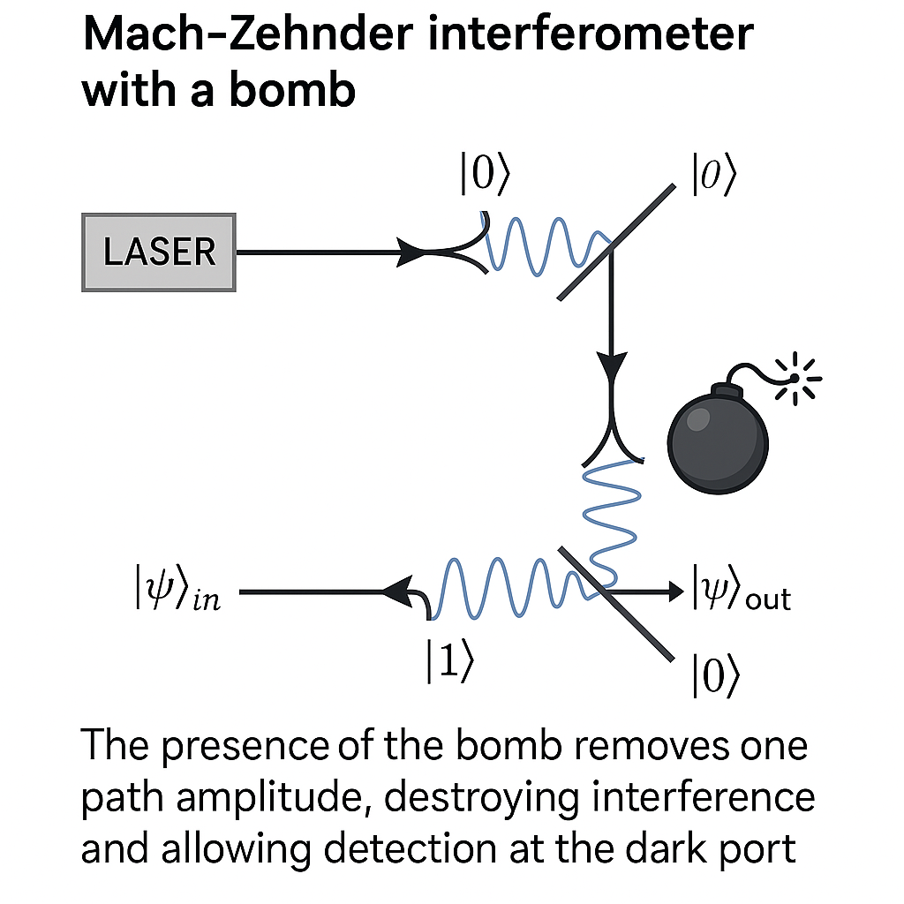
Kwiat 等人提出利用多次弱「路徑測量」與量子 Zeno 效應，顯著提升互動自由測量的成功機率，理想極限下接近 100%。其基本想法是：
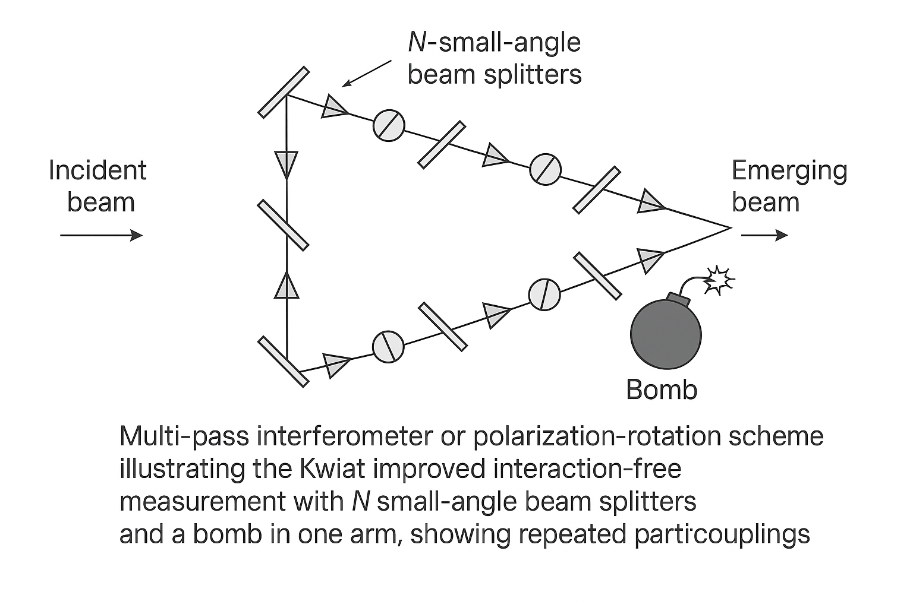
以二能階系統表述，例如使用極化態 \(|H\rangle,|V\rangle\) 或兩個路徑態。假設初態為 \(|\psi_0\rangle = |H\rangle\)，希望透過 N 次小旋轉將其變為 \(|V\rangle\)： \[ |\psi_k\rangle = R(\theta)|\psi_{k-1}\rangle,\quad R(\theta) = \begin{pmatrix} \cos\theta & -\sin\theta\\ \sin\theta & \cos\theta \end{pmatrix}, \] 選擇 \(\theta = \frac{\pi}{2N}\)，經過 N 步 \[ |\psi_N\rangle = R(\theta)^N |H\rangle = R(N\theta)|H\rangle = R(\pi/2)|H\rangle = |V\rangle. \]
若在 \(|V\rangle\) 通道放置炸彈，且每一步後都進行「是否爆炸」的檢查（相當於對 \(|V\rangle\) 分量做 projective 測量），則在第 k 步之後，若未爆炸，態在 \(|H\rangle\) 上被「投影回去」，相當於量子 Zeno。計算顯示：
同時，若無炸彈，則沒有這些 projective 測量，態順利被旋轉為 \(|V\rangle\)。最終：
在這裡，炸彈（或等效的強吸收體）引入了在每一步上的「路徑/極化基底退相干」，但因為測量是頻繁而弱，形成 Zeno 型動力學，極大地提升了「互動自由偵測」效率。
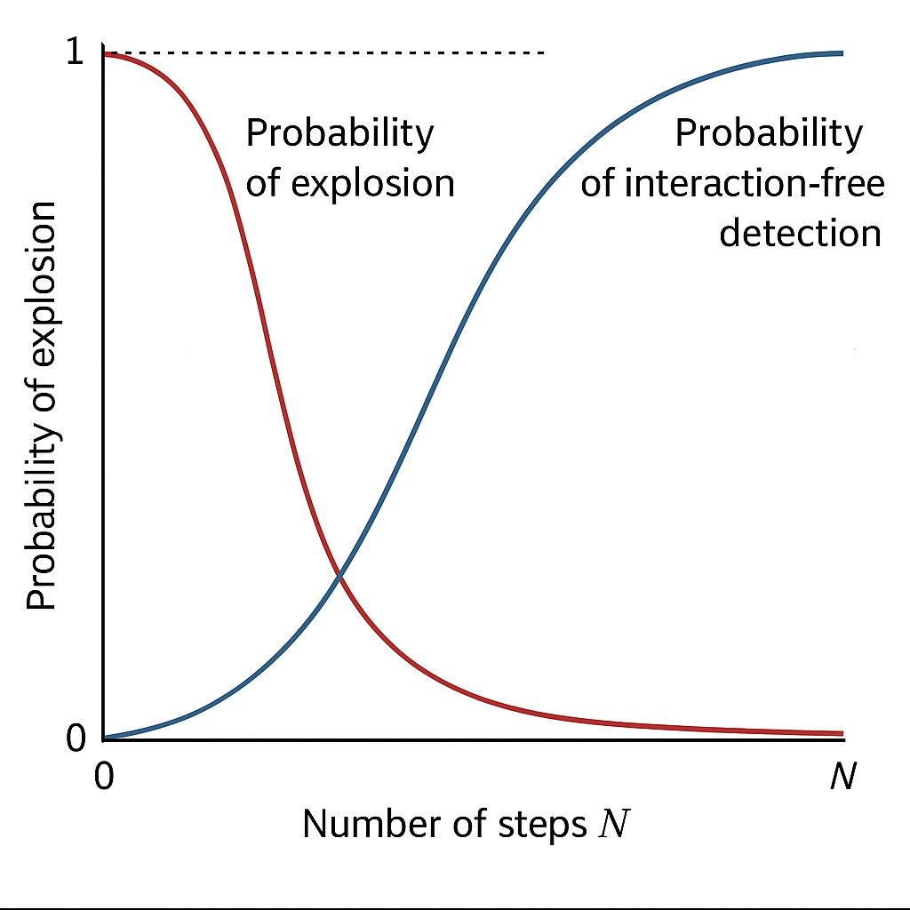
Counterfactual quantum computation 構想：在某些量子電路/干涉裝置設定下，理論上可以在沒有實際執行計算子電路的前提下推知計算結果。這是互動自由測量的延伸：不觸發「炸彈」，而是「不執行計算」卻獲知其輸出。
典型方案（Mitchison–Jozsa, Hosten 等）的想法是：
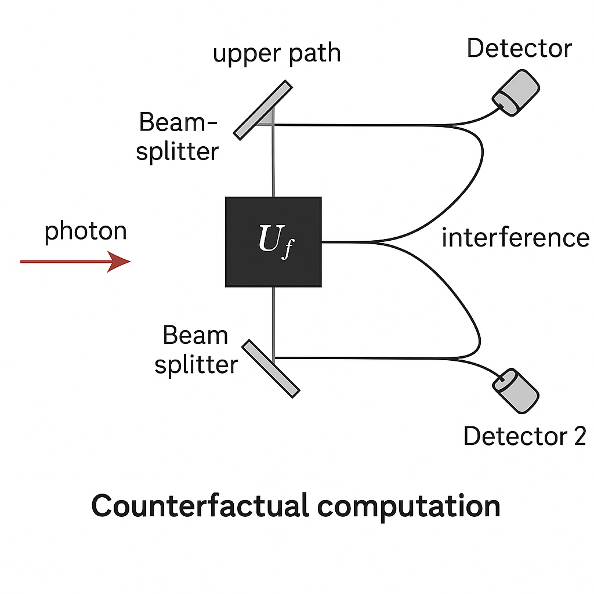
以雙態系統與控制量子閘的模型說明。令一個控制量子態 \(|c\rangle\)，初態為 \(|0\rangle_c\)，另有一個「計算子系統」 \(Q\) 初態 \(|\psi_{\text{in}}\rangle\)。計算盒 \(U_f\) 作用於 \(Q\)，其輸出 \(|\psi_f\rangle = U_f|\psi_{\text{in}}\rangle\) 含有我們想知道的資訊（例如測量某可觀察量即可得 \(f\)）。
設計控制操作： \[ U = |0\rangle\langle 0|_c \otimes \mathbb{I}_Q + |1\rangle\langle 1|_c \otimes U_f. \] 若可以透過多次小旋轉與干涉，使得在某種情況下（例如 \(f=0\)），控制量子位幾乎沒有變化（維持在 \(|0\rangle_c\)），即「從未觸發 \(U_f\)」。然而，若 \(f=1\)，則干涉圖樣導致控制態有顯著變動。
在極限上，我們可能希望：
在實際情形中，退相干嚴重限制 counterfactual computation 的可行性與效能：
從主方程觀點，可以描述 counterfactual 方案中的每一步路徑分裂與再干涉為 \[ \frac{d\rho}{dt} = -\frac{i}{\hbar}[H_{\text{eff}},\rho] + \sum_j \mathcal{D}[L_j]\rho, \] 其中 \(L_j\) 對應各種退相干機制（相位噪音、散射、吸收等）。為使 counterfactual 結論可靠，必須保證在整個實驗時間內，所有 \(L_j\) 對「路徑／控制位」相干性的抑制足夠小，以維持接近理想的干涉關係。
整體而言，counterfactual quantum computation 的物理本質，是在高度工程化的干涉與退相干控制下，將「資訊的跡象」放大到觀測者的一條世界線上，即便該資訊的來源路徑中在該世界線上看似「未曾發生」某些互動/計算。但在全系統（含所有路徑與環境）的希爾伯特空間中，退相干仍然是不可忽略的：它設定了這種反事實推論得以可靠進行的邊界。
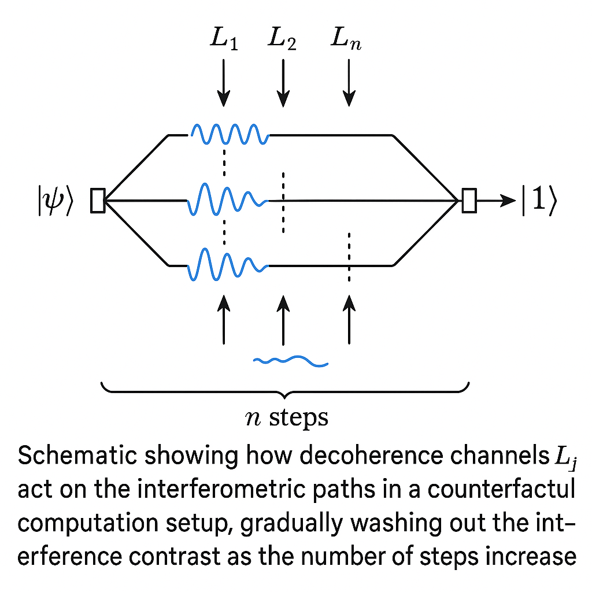
在後續講次中，我們將延伸這裡的框架，探討：